5.3 Designing the Wardrobe
For my creative design, I decided that I will be designing a wardrobe that has doors which goes around the wardrobe. This will allow to save space while opening the wardrobe's door. I designed my wardrobe on Fusion 360. Initially, I started by doing a sketch on x/y axises, I drew a ellipse with 1.5 meters to 0.75 m and a circle with 1.25 meters radius.
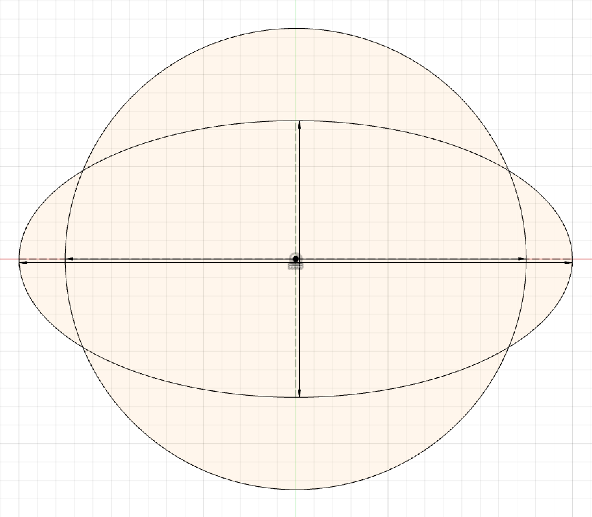Then I used the Conic Curve tool to create curves spanning from the one extreme of circle to another extreme of ellipse, and I curved them according to the closest intersection point. You can see this down below:
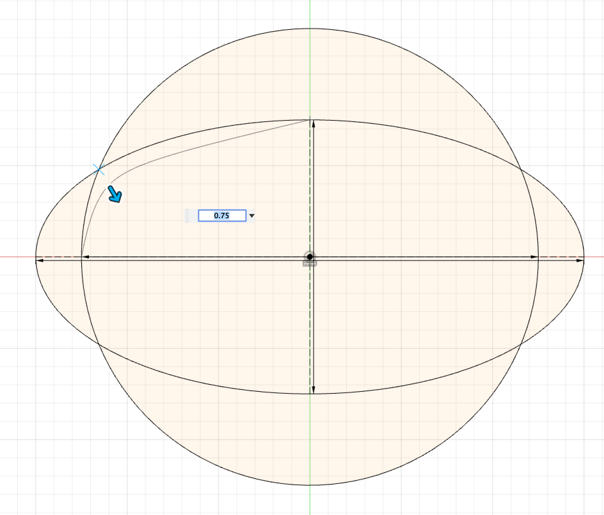After I did that for all sides, I also added 4 more conic curve spanning from one intersection point to another:
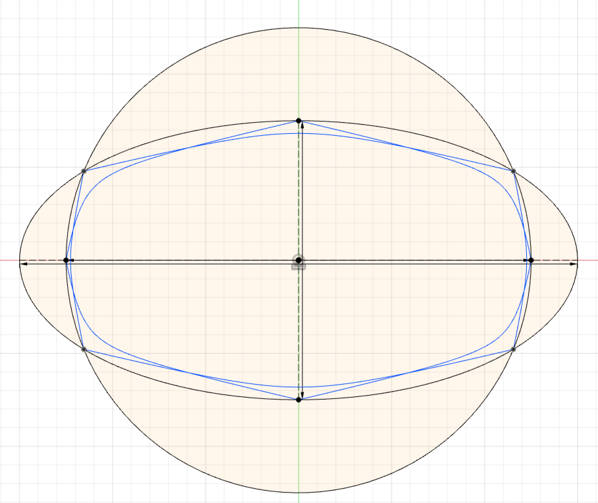After this I used the trim tool to get rid of the excess lines and it looked like this:
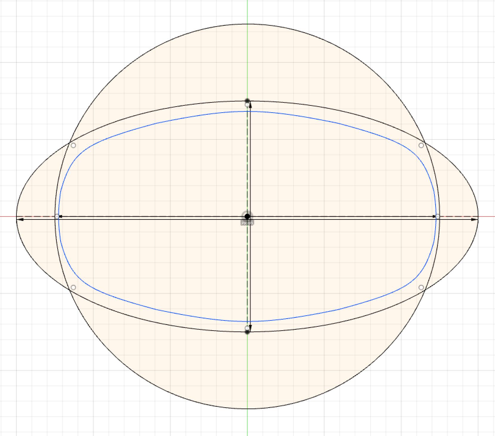After that I drew 3 more ellipses and 3 more circles to make the wall of the wardrobe and the rail where the door will be moving:
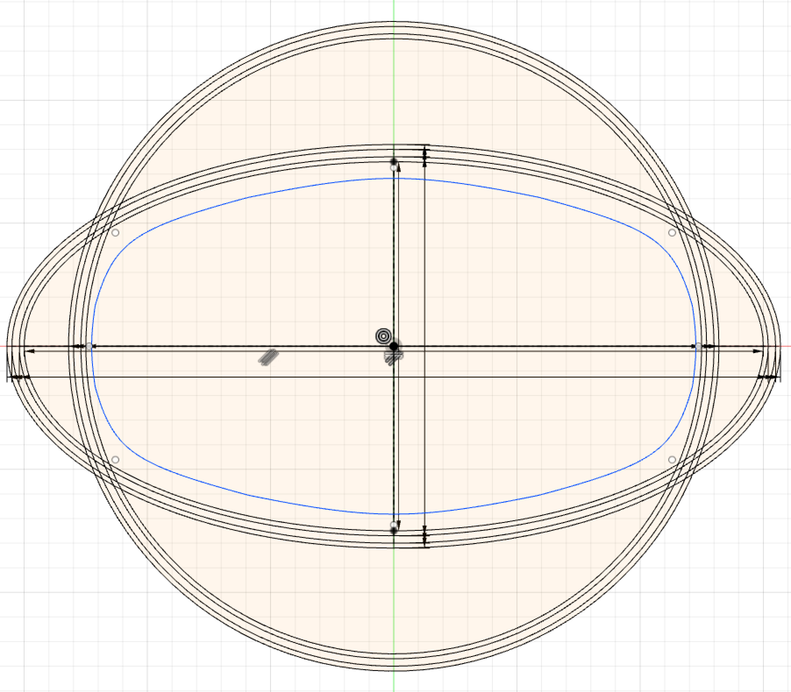Then I repeated the drawing of the conic curves the same way I initially did and then deleted all the excess materials and I end up with this:

After that I drew a line with 45 degree angled horizontal and repeated that around the center 4 times using the circular pattern tool:
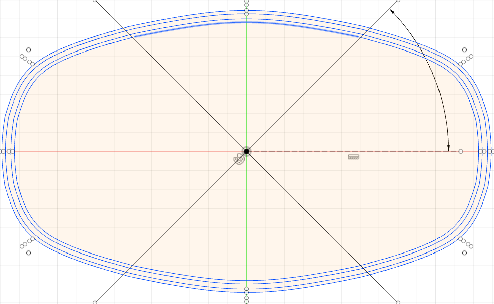After that I constructed an offset plane 2 cm above my sketch and created a new sketch using that offset plane. Then I projected some of my old drawing and drew on it some additional lines that will later on will be used to construct the sliding doors of the furrniture.
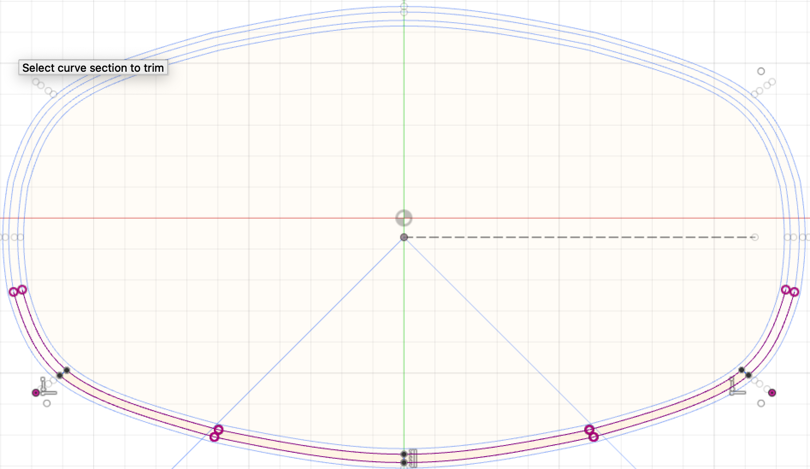Then using those 45 degree copied lines I cut out a doorway and trimmed the excess lines:
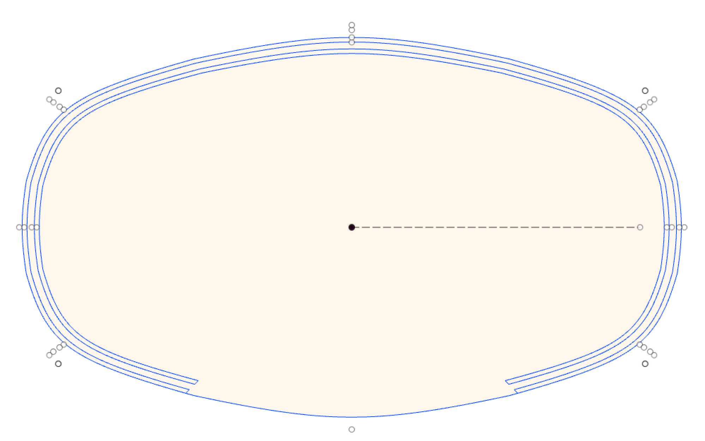TAfter that I extruded all the areas as a seperate new objects, this allowed me to move them seperately. I extruded the biggest area by 0.02 meters, the outer area by 0.04 meters and the middlee part (which is suppose to bee the wall) by 0.79 meters.
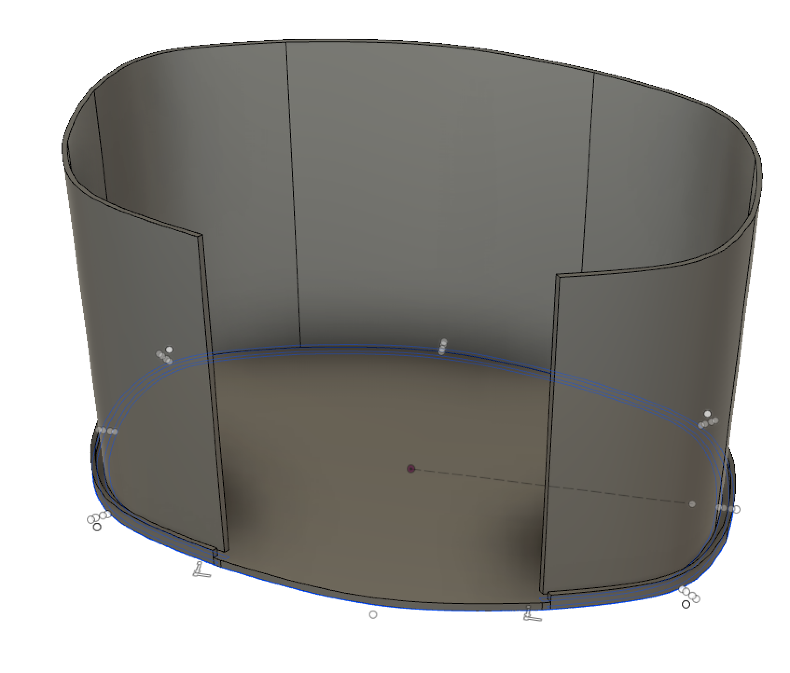However, that thing still doesn't have a top and that is the reason why I extruded all my areas as seperrate objects because now I can duplicate my biggest area and move it up by 0.77 meters and duplicate the outer area and move it up by 0.75 meters. This gave me this:
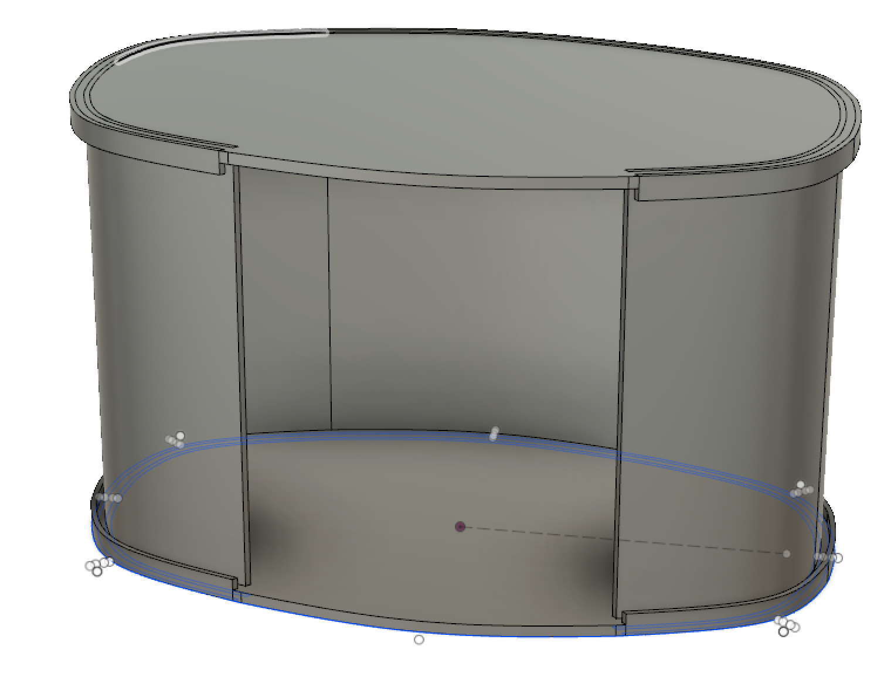After finishing the wardrobe itself, now I need the doors. For that I will use the second sketch I made using the offset plane. Using the offset plane allowed me to make my sketch 2 cm above the ground which is the thickness of the bottom layer meaning that when I extrude my object it will be right on top of the bottom piece.

Now that I have the doors. The only thing left is making the door handles. For that I made another offset plane on the z-axis and moved it infront of the doors. Then I created a new sketch using that offset plane. This allowed me to sketch directly infront of the doors.
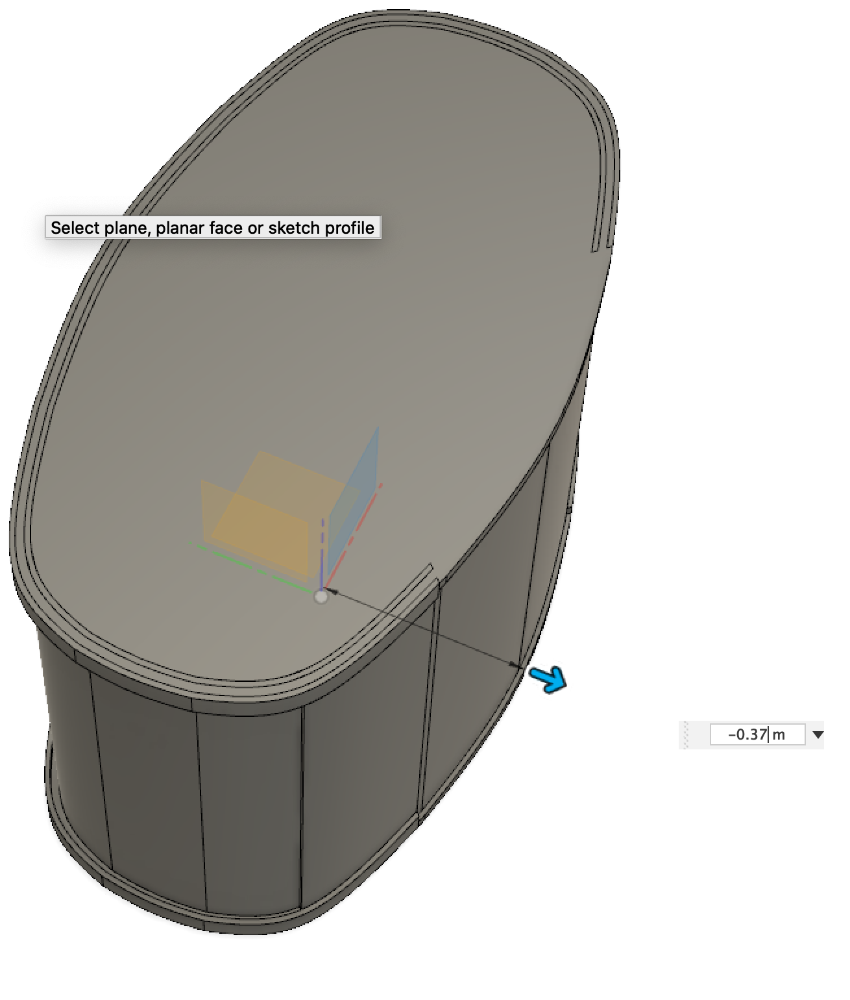I drew two rectangles with 2 cm to 8 cm dimensions. This will give enough space for an ordinary human hand to grab on.
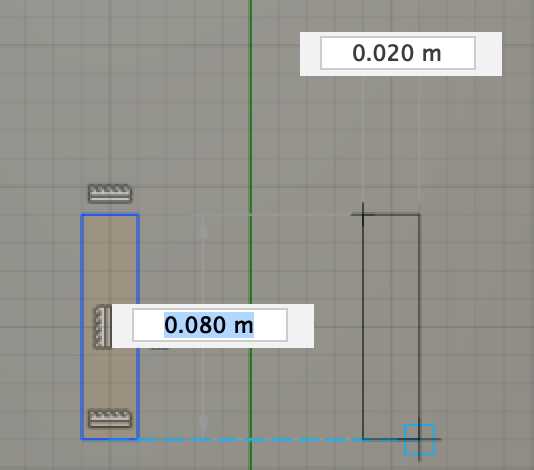Then I used the extrude tool to cut out the door handles. At the end it looked like this
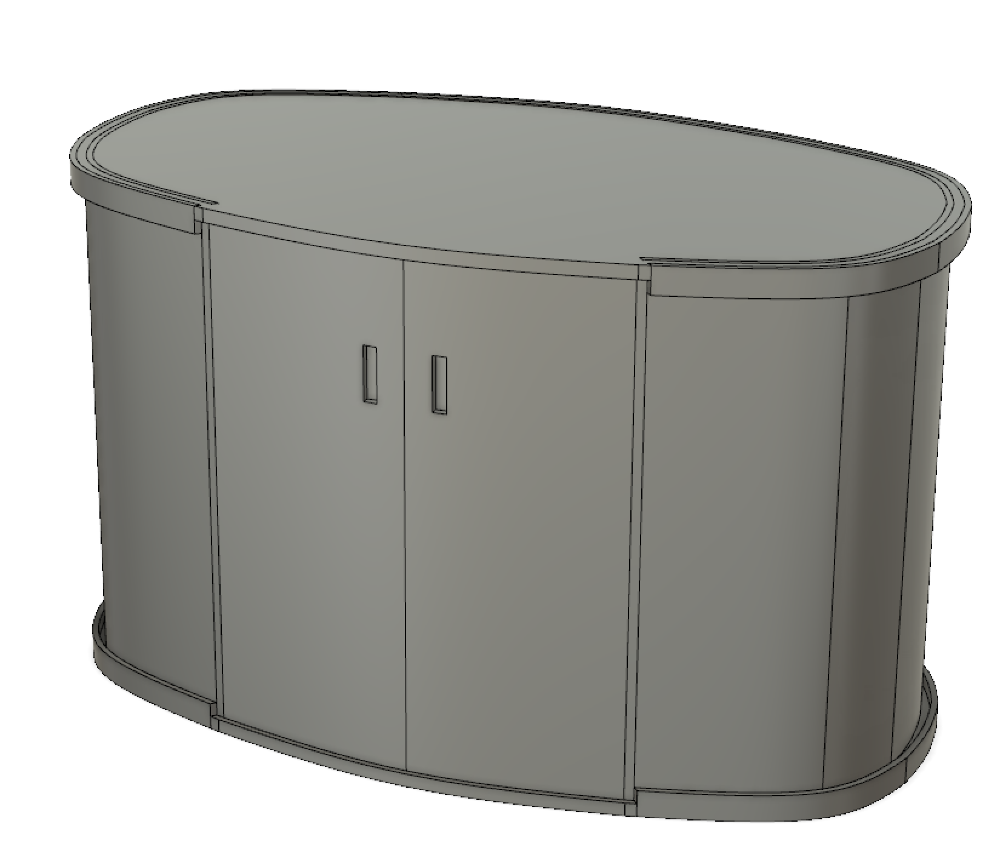